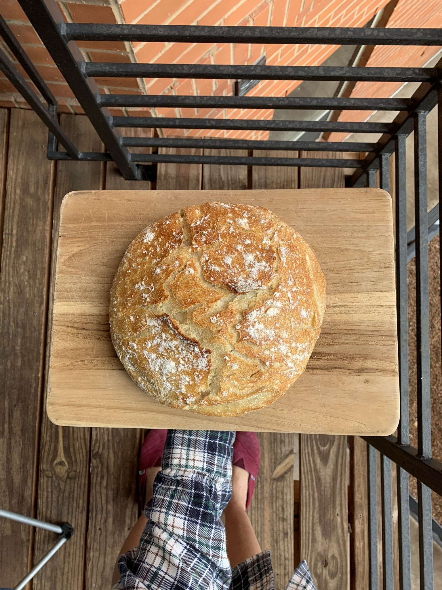

Artisan Style Bread
The easiest, best-looking bread you can make. No kneading is required.
My sister showed me the original recipe, but oops! I made a few
adjustments. It requires a Dutch oven and 5-6 hours of rising.

Ingredients
- 430 grams of all-purpose flour
- 6 grams of salt
- 1/2 teaspoon dry active yeast
- 1 tablespoon sugar
- 374 grams of warm water
Procedure
-
In a large bowl, pour the flour. Create a well in the center, add
sugar, yeast, and water. Let rest for a few minutes.
-
Add salt, then mix well with a spatula until combined. Cover and let
the dough rest for 5-6 hours in a warm place.
- Preheat oven to 425°F (220°C) with the Dutch oven inside.
-
Lightly flour your counter, place the dough on it, and gently fold 4
times. Coat the dough with flour on the counter.
-
Place a large piece of parchment paper inside the hot Dutch oven and
transfer the dough onto it. Score the top of the bread and sprinkle
with flour.
- Bake for 30 minutes with the lid on.
-
Remove the lid and parchment paper, then bake for another 10-20
minutes until golden. Enjoy!